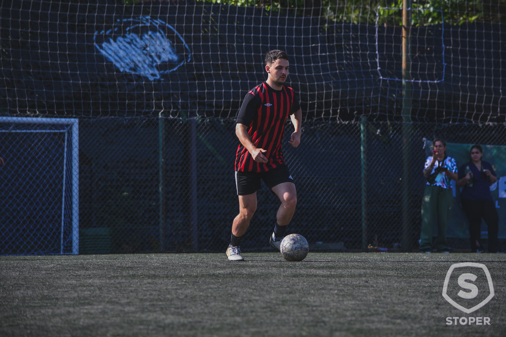

Agustín Santiago Delo

Datos Personales
| Campo |
Información |
| Nombre y Apellido |
Agustín Santiago Delo |
| Lugar de Nacimiento |
Buenos Aires, Argentina |
| Dirección |
Calle Falsa 123, San Isidro |
| Teléfono |
11-5555-5555 |
| Correo electrónico |
deloagustin@gmail.com |
Formación Académica
- Ingeniería en Sistemas (2021-Presente), Universidad Abierta Interamericana. Actualmente en 4to año.
- Técnico Electromecánico (2013-2019), Instituto Dr. Juan Segundo Fernández.
Experiencia Profesional
-
Coordinador del departamento de Tecnología Informática (2024-Presente)
Grupo Educativo Jesús en el Huerto de los Olivos. Localidad: Olivos.
Tareas: Coordinación de equipo, administración de Google Workspace y soporte de redes.
-
Técnico en Sistemas (2021-2024)
Grupo Educativo Jesús en el Huerto de los Olivos.
Tareas: Soporte de equipos informáticos y capacitación de personal.
Idiomas
Nivel de inglés: Alto (Lectura, Habla y Escritura).
- First Certificate of Cambridge (2018).
- CAE Course (2019-2020).
Informática
Nivel de conocimientos: Experto.
- Lenguajes y Tecnologías: C#, .NET, Python, ADO.NET, Entity Framework.
- Bases de Datos: SQL Server (OLTP y OLAP) y Minería de datos.
- Software: Visual Studio, Solidworks.
Gustos y Preferencias
- Seguimiento técnico de la Fórmula 1 y mecánica vehicular.
- Mecánica DIY y proyectos de soldadura.
- Mantenimiento y optimización de bicicletas eléctricas.
Detalles sobre mí
Soy un estudiante avanzado de ingeniería con experiencia en la gestión de infraestructuras IT educativas. Me interesa la arquitectura de software y la resolución de problemas técnicos complejos en entornos de red y bases de datos.